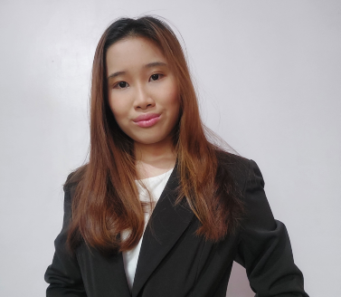

|  | Aurelia Syifa TiaraditaStudent at Universitas Indonesia I am a final year student in Universitas Indonesia. Majoring in Office Administration. |
| Company | Job Details |
|---|---|
| Ministry of Environment and Forestry Administrative Intern Jan 2022 - Jul 2022 |
|
| Freelance Personal Assistant Mar 2020- Nov 2021 |
|
| AIESEC in UI IGV AdHoc Brand And Matching Aug 2019- Jun 2020 |
|
| Community Service Project Manager Nov 2021 - Dec 2021 |
|
| Company | Job Details |
|---|---|
| Model United Nations Member Aug 2021 - Jun 2022 |
|
| Get To Know Vokasi Secretary Mar 2021- Jun 2021 |
|
| Universitas Indonesia Campus Orientation (OKK UI) Mentor Aug 2021 |
|
| ADM Mengajar Volunteer Aug 2019 - Sep 2019 |
|
| ADM Mengajar Volunteer Aug 2019 - Sep 2019 |
|
| ADM Mengajar Volunteer Aug 2019 - Sep 2019 |
|
| Community Service Volunteer Jun 2019 |
|
Office Administration
Social Studies
| Microsoft Office | ⭐⭐⭐⭐ |
| English | ⭐⭐⭐⭐ |
| Python | ⭐ |
| HTML | ⭐⭐ |
| Figma | ⭐⭐ |